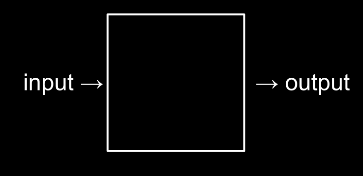
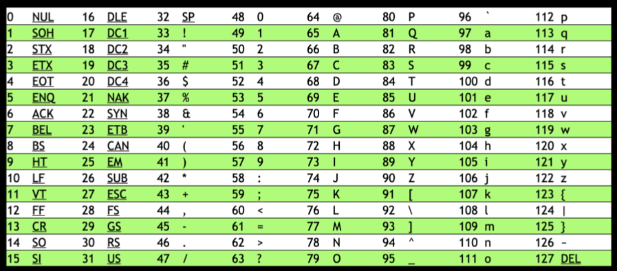
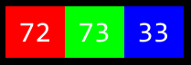
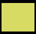
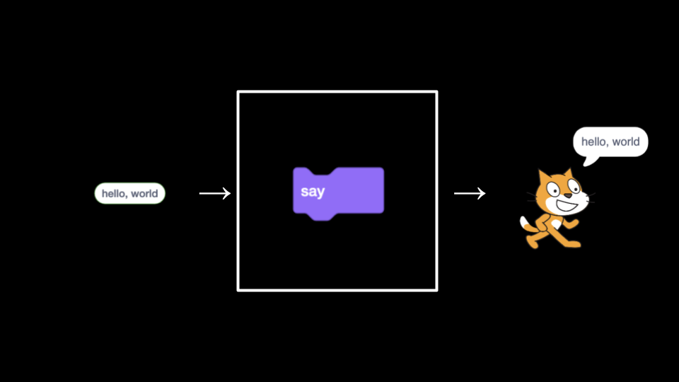
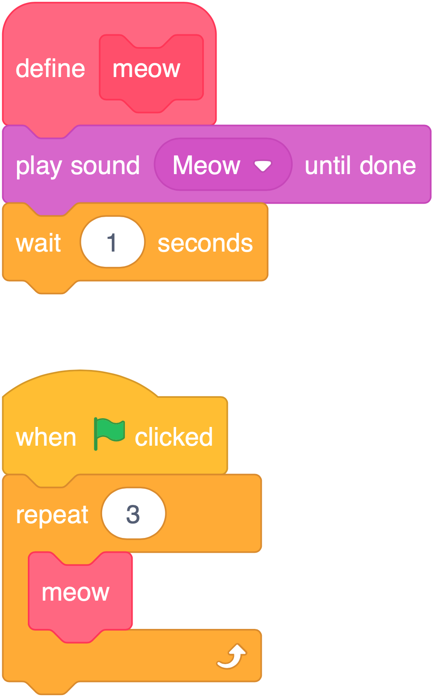

讲座 0
- 欢迎!
- What’s Ahead
- 社区!
- Computational Thinking
- Text
- Emojis
- RGB
- Images, 视频 and Sound
- 算法
- Pseudocode and the Basic Building Blocks of 编程
- Scratch
- Abstraction
- If
- Expanding Your Imagination
- Sprite Movement
- 更多 Sprites
- Summing Up
欢迎!
- This class is 关于 更多 than computer 编程!
- Indeed, this class is 关于 问题-solving in a way that is exceedingly empowering! You will likely find the 问题 solving skills you learn here instantly applicable to your work beyond this 课程 and even your career as a whole!
- However, it will not be easy! You will be “drinking from the firehose” of knowledge during this 课程. You’ll be amazed 在 what you will be able to accomplish in the coming 周次.
- This 课程 is far 更多 关于 you advancing “you” from “where you are today” than hitting some imagined standard.
- The most important opening consideration in this 课程: Give the 时间 you need to learn through this 课程. Everyone learns differently. If something does not work out well 在 the 开始, know that with 时间 you will grow and grow in your skill.
What’s Ahead
- You will be learning this 周 关于 Scratch, a visual 编程 language.
-
Then, in future 周次, you will learn 关于 C. That will look something like this:
#include <stdio.h> int main(void) { printf("hello, world\n"); } - Further, as the 周次 progress, you will learn 关于 算法.
- You will learn 关于 内存.
- You will learn 关于 buggy code and what causes computer crashes.
- You will learn 关于 数据结构 such as a hash table.
-
Then, we will transition to a 新内容, higher-level language called Python. Your code will look something like this:
print("hello, world") - This class will give you a strong understanding of how recent 编程 languages developed from the earlier ones.
- We will also be looking 在 how we can use 数据库 and third-party frameworks to build web applications.
社区!
- You are part of a 社区 of those taking this 课程 在 哈佛学院, 哈佛继续教育学院, and via edX.org.
- Puzzle Day and the CS50 Fair
Computational Thinking
-
Essentially, computer 编程 is 关于 taking some input and creating some output - thus solving a 问题. What happens in between the input and output, what we could call a black box, is the focus of this 课程.

- For 示例, we 五月 need to take attendance for a class. We could use a system called unary to count, one finger 在 a 时间. Computers today count using a system called binary. It’s from the term binary digit that we get a familiar term called bit. A bit is a zero or one.
- Computers only speak in terms of zeros and ones. Zeros represent off. Ones represent on. Computers are millions, and perhaps billions, of transistors that are being turned on and off.
- If you imagine using a light bulb, a single bulb can only count from zero to one.
- However, if you were to have three light bulbs, there are 更多 options 打开 to you!
-
Using three light bulbs, the following could represent zero:
0 0 0 -
Similarly, the following would represent one:
0 0 1 -
By this logic, we could propose that the following equals two:
0 1 0 -
Extending this logic further, the following represents three:
0 1 1 -
Four would appear as:
1 0 0 -
We could, in fact, using only three light bulbs count as high as seven!
1 1 1 -
As a heuristic, we could imagine that the following values represent each possible place in our binary digit:
4 2 1 -
Computers use ‘base-2’ to count. This can be pictured as follows:
2^2 2^1 2^0 4 2 1 -
Therefore, you could say that it would require three bits (the four’s place, the two’s place, and the one’s place) to represent a number as high as seven.
- Computers generally use eight bits to represent a number. For 示例,
00000101is the number 5 in binary.
Text
- Just as numbers are binary patterns of ones and zeros, letters are represented using ones and zeros too!
- Since there is an overlap between the ones and zeros that represent numbers and letters, the ASCII standard was created to map specific letters to specific numbers.
- For 示例, the letter
Awas decided to map to the number 65. -
If you received a text message, the binary under that message might represent the numbers 72, 73, and 33. Mapping these out to ASCII, your message would look as follows:
H I ! 72 73 33 - Thank goodness for standards like ASCII that allow us to agree upon these values!
-
Here is an expanded map of ASCII values:

- If you wish, you can learn 更多 关于 ASCII.
Emojis
- As 时间 has rolled on, there are 更多 and 更多 ways to communicate via text.
- Since there were not enough digits in binary to represent all the various characters that could be represented by humans, the Unicode standard expanded the number of bits that can be transmitted and understood by computers.
-
There are emojis that you probably use every day. The following 五月 look familiar to you:

- Computer scientists faced a challenge when wanting to assign various skin tones to each emoji to allow the communication to be further personalized. In this case, the creators and contributors of emojis decided that the initial bits would be the structure of the emoji itself, followed by skin tone.
- 更多 and 更多 features are being added to the Unicode standard to represent further characters and emojis.
- If you wish, you can learn 更多 关于 Unicode.
- If you wish, you can learn 更多 关于 emojis.
RGB
-
Red, green, and blue (called
RGB) is a combination of three numbers.
-
Taking our previously used 72, 73, and 33, which said
HI!via text, would be interpreted by image readers as a light shade of yellow. The red value would be 72, the green value would be 73, and the blue would be 33.
Images, 视频 and Sound
- Images are simply collections of RGB values.
- 视频 are sequences of many images that are stored together, just like a flipbook.
- Music can be represented through MIDI data.
算法
- 问题-solving is central to 计算机科学 and computer 编程.
- Imagine the basic 问题 of trying to locate a single 姓名 in a 电话 book.
- How might you go 关于 this?
- One approach could be to simply 阅读 from page one to the 下一页 to the 下一页 until reaching the last page.
- Another approach could be to 搜索 two pages 在 a 时间.
- A final and perhaps better approach could be to go to the middle of the 电话 book and ask, “Is the 姓名 I am 在找 to the left or to the right?” Then, repeat this process, cutting the 问题 in half and half and half.
-
Each of these approaches could be called 算法. The speed of each of these 算法 can be pictured as follows in what is called big-O notation:
 Notice that the first algorithm, highlighted in red, has a big-O of
Notice that the first algorithm, highlighted in red, has a big-O of nbecause if there are 100 names in the 电话 book, it could take up to 100 tries to find the correct 姓名. The second algorithm, where two pages were searched 在 a 时间, has a big-O of ‘n/2’ because we searched twice as fast through the pages. The final algorithm has a big-O of log2n as doubling the 问题 would only result in one 更多 step to solve the 问题.
Pseudocode and the Basic Building Blocks of 编程
- The ability to create pseudocode is central to one’s success in both this class and in computer 编程.
-
Pseudocode is a human-readable version of your code. For 示例, considering the third algorithm above, we could compose pseudocode as follows:
1 Pick up phone book 2 Open to middle of phone book 3 Look at page 4 If person is on page 5 Call person 6 Else if person is earlier in book 7 Open to middle of left half of book 8 Go back to line 3 9 Else if person is later in book 10 Open to middle of right half of book 11 Go back to line 3 12 Else 13 Quit - Pseudocoding is such an important skill for 在 least two reasons. First, when you pseudocode before you create formal code, it allows you to think through the logic of your 问题 in advance. Second, when you pseudocode, you can later provide this information to others that are seeking to understand your coding decisions and how your code works.
- Notice that the language within our pseudocode has some unique features. First, some of these lines begin with verbs like pick up, 打开, look 在. Later, we will call these functions.
- Second, notice that some lines include statements like
iforelse if.These are called conditionals. - Third, notice how there are expressions that can be stated as true or false, such as “person is earlier in the book.” We call these boolean expressions.
- Finally, notice how these statements like “go 返回 to line 3.” We call these loops.
- In the context of Scratch, which is discussed below, we will use each of the above basic building blocks of 编程.
Scratch
- Scratch is a visual 编程 language developed by MIT.
- Scratch utilizes the same essential coding building blocks that we covered earlier in this 讲座.
- Scatch is a great way to get into computer 编程 because it allows you to play with these building blocks in a visual manner, not having to be concerned 关于 the syntax of curly braces, semicolons, parentheses, and the like.
-
Scatch
IDE(integrated development environment) looks like the following: Notice that on the left, there are building blocks that you can use in your 编程. To the immediate right of the building blocks, there is the area to which you can drag blocks to build a program. To the right of that, you see the stage where a cat stands. The stage is where your 编程 comes to life.
Notice that on the left, there are building blocks that you can use in your 编程. To the immediate right of the building blocks, there is the area to which you can drag blocks to build a program. To the right of that, you see the stage where a cat stands. The stage is where your 编程 comes to life. -
Scratch operates on a coordinate system as follows:
 Notice that the center of the stage is 在 coordinate (0,0). Right now, the cat’s position is 在 that same position.
Notice that the center of the stage is 在 coordinate (0,0). Right now, the cat’s position is 在 that same position. -
To begin, drag the “when green flag clicked” building block to the 编程 area. Then, drag the
saybuilding block to the 编程 area and attach it to the 上一页 block.when green flag clicked say [hello, world]Notice that when you click the green flag now, on the stage, the cat says, “你好 世界.”
-
This illustrates quite well what we were discussing earlier regarding 编程:

Notice that the inputhello worldis passed to the functionsay, and the side effect of that function running is the cat sayinghello world. -
We can make your program 更多 interactive by having the cat say
helloto someone specific. Modify your program as below:when green flag clicked ask [What's your name?] and wait say (join [hello,] (answer))Notice that when the green flag is clicked, the function
askis run. The program prompts you, the user,What's your name?It then stores that 姓名 in the variable calledanswer. The program then passesanswerto a special function calledjoin, which combines two strings of texthello, and whatever 姓名 was provided. These collectively are passed to thesayfunction. The cat says,Hello,and a 姓名. Your program is now interactive. -
Quite similarly, we can modify our program as follows:
when green flag clicked ask [What's your name?] and wait speak (join [hello,] (answer))Notice that this program, when the green flag is clicked, passes the same variable, joined with
hello, to a function calledspeak.
Abstraction
- Along with pseudocoding, abstraction is an essential skill and concept within computer 编程.
- Abstraction is the act of simplifying a 问题 into smaller and smaller 问题.
- For 示例, if you were hosting a huge dinner for your friends, the 问题 of having to cook the entire meal could be quite overwhelming! However, if you break down the task of cooking the meal into smaller and smaller tasks (or 问题), the big task of creating this delicious meal might feel 较少 challenging.
-
In 编程, and even within Scratch, we can see abstraction in action. In your 编程 area, program as follows:
when green flag clicked play sound (Meow v) until done wait (1) seconds play sound (Meow v) until done wait (1) seconds play sound (Meow v) until doneNotice that you are doing the same thing over and over again. Indeed, if you see yourself repeatedly coding the same statements, it’s likely the case that you could program 更多 artfully – abstracting away this repetitive code.
-
You can modify your code as follows:
when green flag clicked repeat (3) play sound (Meow v) until done wait (1) secondsNotice that the loop does exactly as the 上一页 program did. However, the 问题 is simplified by abstracting away the repetition to a block that repeats the code for us.
-
We can even advance this further by using the
defineblock, where you can create your own block (your own function)! Write code as follows:
Notice that we are defining our own block calledmeow. The function plays the soundmeow, then waits one second. Below that, you can see that when the green flag is clicked, our meow function is repeated three times. -
We can even provide a way by which the function can take an input
nand repeat a number of times:define meow play sound (Meow v) until done wait (1) seconds when green flag clicked repeat (3) meowNotice how
nis taken from “meow n times.”nis passed to the meow function through thedefineblock. - The cat, by the way, we can call a
sprite– a general term used in game 编程 for an object or character on the screen with which the player will interact.
If
- conditionals are an essential building block of 编程, where the program looks to see if a specific condition has been met. If a condition is met, the program does something.
-
To illustrate a conditional, write code as follows:
when green flag clicked forever if <touching (mouse-pointer v)?> then play sound (Meow v) until doneNotice that the
foreverblock is utilized such that theifblock is triggered over and over again, such that it can check continuously if the cat is touching the mouse pointer. -
We can modify our program as follows to integrate 视频 sensing:
when video motion > (50) play sound (Meow v) until done - Remember, 编程 is often a process of trial and error. If you get frustrated, take 时间 to talk yourself through the 问题 在 hand. What is the specific 问题 that you are working on right now? What is working? What is not working?
Expanding Your Imagination
- We showed you in this 讲座 a number of Scratch programs to stoke your imagination.
- Oscartime is one of David’s own Scratch programs – though the music 五月 haunt him because of the number of 时间 he listened to it while creating this program. Take a few moments to play through the game yourself.
-
Building Oscartime ourselves, we first add the lamp post.

-
Then, write code as follows:
when green flag clicked switch costume to (oscar1 v) forever if <touching (mouse-pointer v)?> then switch costume to (oscar2 v) else switch costume to (oscar1 v)Notice that moving your mouse over Oscar changes his costume. You can learn 更多 by exploring these code blocks.
-
Then, modify your code as follow to create a falling piece of trash:
when green flag clicked go to x: (pick random (-240) to (240)) y: (180) forever if <(distance to (floor v)) > (0)> then change y by (-3)Notice that the trash’s position on the y-axis always begins 在 180. The x position is randomized. While the trash is above the floor, it goes down 3 pixels 在 a 时间. You can learn 更多 by exploring these code blocks.
-
下一页, modify your code as follows to allow for the possibility of dragging trash.
when green flag clicked forever if <<mouse down?> and <touching (mouse-pointer v) ?>> then go to (mouse-pointer v)You can learn 更多 by exploring these code blocks.
-
下一页, we can implement the scoring variables as follows:
when green flag clicked forever if <touching (Oscar v) ?> then change (score) by (1) go to x: (pick random (-240) to (240)) y: (180)You can learn 更多 by exploring these code blocks.
Sprite Movement
- Moving away from Oscartime to Ivy’s Hardest Game, we can now imagine how to implement movement within our program.
- Our program has three main components.
-
First, write code as follows:
when green flag clicked go to x: (0) y: (0) forever listen for keyboard feel for wallsNotice that when the green flag is clicked, our sprite moves to the center of the stage 在 coordinates (0,0) and then listens for the keyboard and checks for walls forever.
-
Second, add this second group of code blocks:
define listen for keyboard if <key (up arrow v) pressed?> then change y by (1) end if <key (down arrow v) pressed?> then change y by (-1) end if <key (right arrow v) pressed?> then change x by (1) end if <key (left arrow v) pressed?> then change x by (-1) endNotice how we have created a custom
listen for keyboardscript. For each of our arrow keys on the keyboard, it will move the sprite around the screen. -
Finally, add this group of code blocks:
define feel for walls if <touching (left wall v) ?> then change x by (1) end if <touching (right wall v) ?> then change x by (-1) endNotice how we also have a custom
feel for wallsscript. When a sprite touches a wall, it moves it 返回 to a safe position – preventing it from walking off the screen. - You can learn 更多 by exploring these code blocks.
- Go try the full game Oscartime.
更多 Sprites
- Scratch allows for many sprites to be on the screen 在 once.
-
Adding another sprite, add the following code blocks to your program:
when green flag clicked go to x: (0) y: (0) point in direction (90) forever if <<touching (left wall v)?> or <touching (right wall v)?>> then turn right (180) degrees end move (1) steps endNotice how the Yale sprite seems to get in the way of the Harvard sprite by moving 返回 and forth. When it bumps into a wall, it turns around until it bumps the wall again. You can learn 更多 by exploring these code blocks.
-
You can even make a sprite follow another sprite. Adding another sprite, add the following code blocks to your program:
when green flag clicked go to (random position v) forever point towards (Harvard v) move (1) stepsNotice how the MIT logo now seems to follow around the Harvard one. You can learn 更多 by exploring these code blocks.
- Go try the full game Ivy’s Hardest Game.
Summing Up
In this lesson, you learned how this 课程 sits in the wide 世界 of 计算机科学 and 编程. You learned…
- Few students come to this class with prior coding experience!
- You are not alone! You are part of a 社区.
- 问题 solving is the essence of the work of computer scientists.
- This 课程 is not simply 关于 编程 – this 课程 will introduce you to a 新内容 way of learning that you can apply to almost every area of life.
- How numbers, text, images, music, and 视频 are understood by computers.
- The fundamental 编程 skill of pseudocoding.
- How abstraction will play a role in your future work in this 课程.
- The basic building blocks of 编程, including functions, conditionals, loops, and variables.
- How to build a 项目 in Scratch.
See you 下一页 时间!